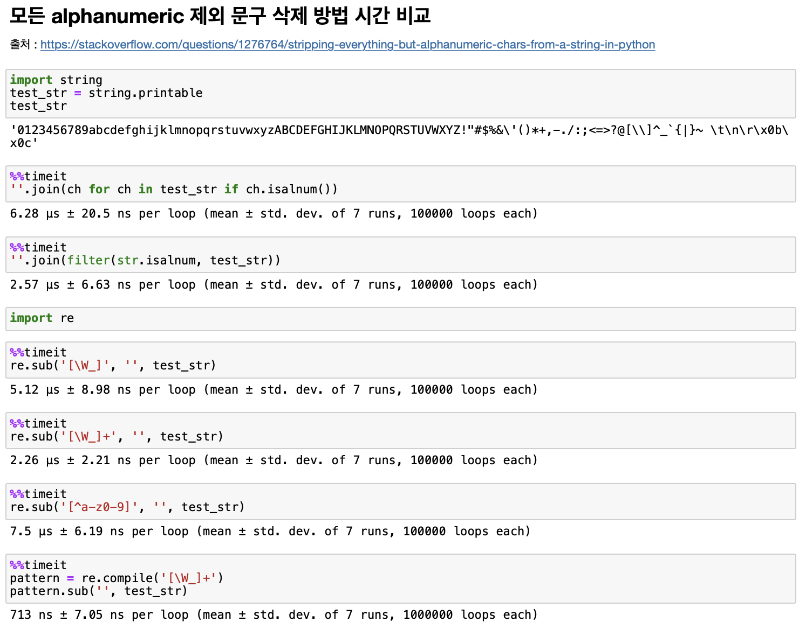

[ LeetCode #125 ] Valid Palindrom 유효한 팰린드롬 # [ LeetCode #125 ] Valid Palindrome 바로가기 # 💡 유용한 지식 # ‘팰린드롬’ 이란? 앞뒤가 똑같은 단어나 문장으로, 뒤집어도 같은말이 되는 단어 또는 문장 리스트 pop(0) 과 데크 popleft() 리스트 pop(0) 이 O(n) 인데 반해 deque popleft() 가 O(1) 이기 때문에 n번씩 반복하면 리스트는 O(n2), deque 구현은 O(n)으로 성능 차이가 크다. 문자열 슬라이싱 슬라이싱은 내부적으로 C로 구현되어 있어서 더 빠르다. 위치를 지정하면 해당 위치의 배열 포인터를 얻게 되며 이를 통해 연결된 객체를 찾아 실제 값을 찾아내어 슬라이싱 사용시 속도 개선에 유리하다. 문자열 판별 함수 string.isalnum() ## alphanumeric 판별 string.isalpha() ## alphabet 판별 # 파이썬의 숫자 판별함수; 포함 범위 : numeric > digit > decimal string.isnumeric() ## numeric 판별 string.isdigit() string.isdecimal() 문자열 숫자 판별 함수 비교 : isnumeric() > isdigit() > isdecimal() ↕ isdigit() 특수 기호 중에서 어깨위에 제곱이나 세제곱을 표시하는 문자가 있다. digit은 이렇게 ‘숫자처럼 생긴’ 모든 글자를 다 숫자로 치는 것이다. isnumeric() numeric 하다는 것은 보다 넓은 의미인데, isdigit()은 단일 글자가 ‘숫자’ 모양으로 생겼으면 True를 리턴한다고 했다. isnumeric()은 숫자값 표현에 해당하는 텍스트까지 인정해준다. 예를 들어 “½” 이런 특수문자도 isnumeric()에서는 True로 판정된다. isdecimal() 이것이 우리가 흔히 생각하는 ‘숫자’와 같은 개념이다. 즉 ‘0123456789’의 구성으로 이루어진 10개의 글자. 말 그대로 int 타입으로 즉시 변환이 가능한 리터럴을 구성하는 문자 </div> 문자열을 alphanumeric 으로만 클린징하는 방법 시간 비교 ↕  문제 # A phrase is a palindrome if, after converting all uppercase letters into lowercase letters and removing all non-alphanumeric characters, it reads the same forward and backward. Alphanumeric characters include letters and numbers. Given a string s, return true if it is a palindrome, or false otherwise. Examples ↕ Example 1: Input: s = "A man, a plan, a canal: Panama" Output: true Explanation: "amanaplanacanalpanama" is a palindrome. Example 2: Input: s = "race a car" Output: false Explanation: "raceacar" is not a palindrome. Example 3: Input: s = " " Output: true Explanation: s is an empty string "" after removing non-alphanumeric characters. Since an empty string reads the same forward and backward, it is a palindrome. Constraints: 1 <= s.length <= 2 * 105 s consists only of printable ASCII characters. 내가 했던 접근 # 실패 History ↕ 리스트 컴프리헨션 안에 else ‘’ 가 아닌 None 으로 해서 그냥 틀린 답안을 제출함 [ 풀이 ] alphanumeric 판별을 input을 차례로 읽으면서 직접 비교하였고 팰린드롬은 list의 슬라이싱으로 판별 [ 결과 ] Runtime: 56 ms, faster than 59.39% of Python online submissions. Memory Usage: 16 MB, less than 14.33% of Python online submissions. [ 코드 ] class Solution(object): def isPalindrome(self, s): alphabet= 'abcdefghijklmnopqrstuvwxyzABCDEFGHIJKLMNOPQRSTUVWXYZ' numeric= '0123456789' new_s = ''.join([char.lower() if char in alphabet \ else (char if char in numeric else '')\ for char in s ]) if new_s[::-1] == new_s: return True else: return False [ 반성 ] 과도한 리스트 컴프리헨션으로 가독성이 다소 떨어지는 것 같다. 사실 처음에 문제를 자세하게 정독하지 않고 ‘alphanumeric’이 아닌 알파벳으로만 생각해서 풀었다. 시간과 공간 효율이 좋지 못한 알고리즘인 것 같다. return이 True, False라면 if문 없이 더 간결하게 표현 가능하다. 책 풀이 # [ 풀이 ] input string 을 읽어들이면서 alphanumeric을 판별하는 방식 3가지 (1) list 와 isalnum() (2) deque 와 isalnum() (3) re 정규표현식 활용 팰린드롬 판별 3가지 (1) list 의 pop() (2) deque 의 popleft() (3) list의 슬라이싱 위의 방법을 조합하여 총 3가지 방법 소개 방법 1 : list + isalnum() + pop() 방법 2 : deque + isalnum() + popleft() 방법 3 : re + list 슬라이싱 [ 결과 ] 방법 1 : list + isalnum() + pop() Runtime: 276 ms, faster than 29.50% of Python online submissions for Valid Palindrome. Memory Usage: 15.2 MB, less than 37.33% of Python online submissions for Valid Palindrome. 방법 2 : deque + isalnum() + popleft() Runtime: 40 ms, faster than 85.54% of Python online submissions for Valid Palindrome. Memory Usage: 14.8 MB, less than 53.26% of Python online submissions for Valid Palindrome. 방법 3 : re + list 슬라이싱 Runtime: 38 ms, faster than 87.41% of Python online submissions for Valid Palindrome. Memory Usage: 15.9 MB, less than 15.82% of Python online submissions for Valid Palindrome. [ 코드 ] 방법 1 : list + isalnum() + pop() class Solution(object): def isPalindrome(self, s:str)-> bool: str_list = [] for char in s: if char.isalnum(): str_list.append(char.lower()) while len(str_list)>1: if str_list.pop(0) != str_list.pop(): return False return True 방법 2 : deque + isalnum() + popleft() class Solution(object): def isPalindrome(self, s:str)-> bool: str_list = [] for char in s: if char.isalnum(): str_list.append(char.lower()) while len(str_list)>1: if str_list.pop(0) != str_list.pop(): return False return True 방법 3 : re + list 슬라이싱 import re class Solution(object): def isPalindrome(self, s): s = s.lower() new_s = re.sub('[^a-z0-9]','',s) return new_s[::-1] == new_s